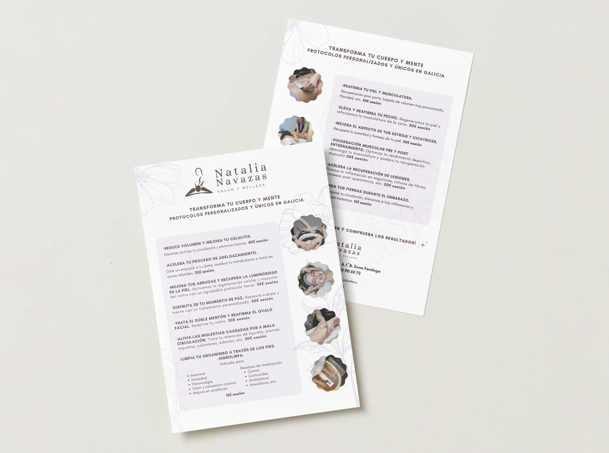

Branding y social media
Desarrollo de identidades
Desarrollo identidades de marca y las llevo a su aplicación real en redes sociales, creando contenido coherente, estratégico y alineado a cada proyecto.
- Una marca no termina cuando se diseña, empieza cuando se comunica
- Una comunicación clara y coherente es lo que convierte una buena imagen en una marca sólida.